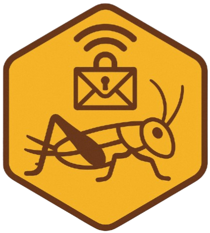

PROJECT
CEES-Chirp
- Version
- 0.1.0-alpha
- Status
- INTERNAL – Not for public distribution
- Platforms
- Linux · Windows · macOS · Android · iOS
- Native
- NumPy · SciPy · PyQt5 · sounddevice · FFmpeg · cryptography · Matplotlib

ZZX-LABS R&D // SOFTWARE // WEB MIRROR
INTERNAL Cricket Encrypted Encoding Specifications acoustic protocol workbench using 12-bit symbol IDs, dual-channel phase coding, deterministic chirp synthesis, authenticated encryption envelopes, frame checksums, and air-gap transfer simulation.
INTERNAL // ACOUSTIC DATA PROTOCOL
Each 12-bit symbol maps to a deterministic carrier-frequency bin and dual-channel phase pair.
PROJECT
WEB BASELINE
Authenticated encryption, 12-bit packing, dual-channel phase mapping and WAV generation are implemented locally; species-sample classification remains outside this archive.